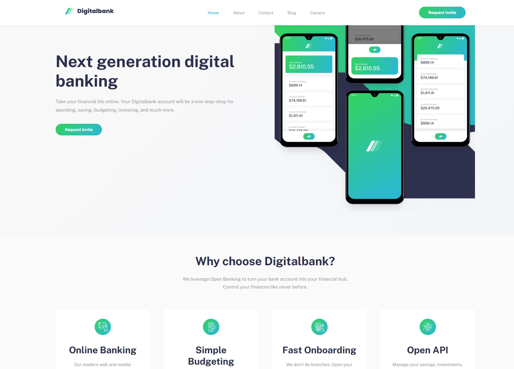
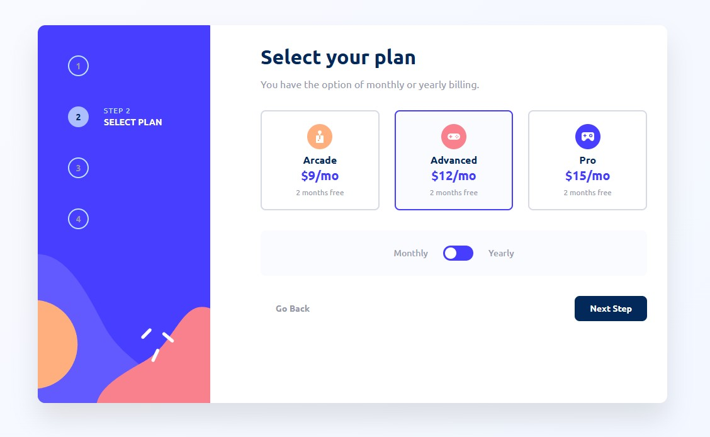
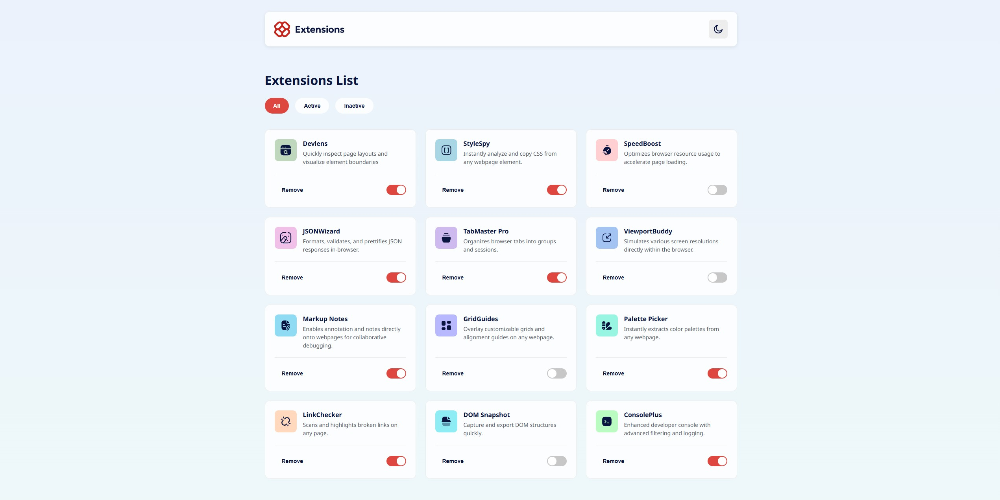
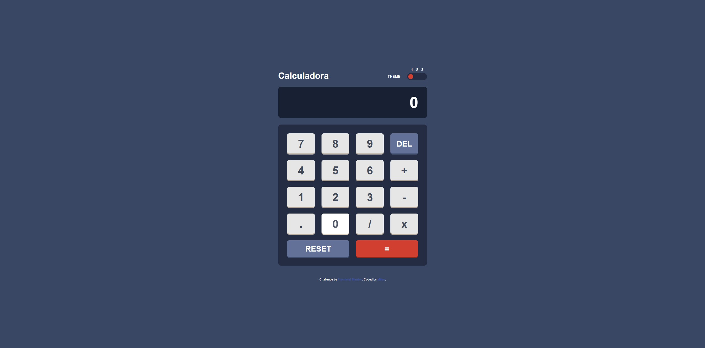
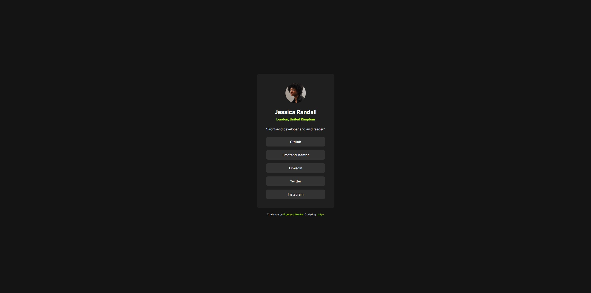
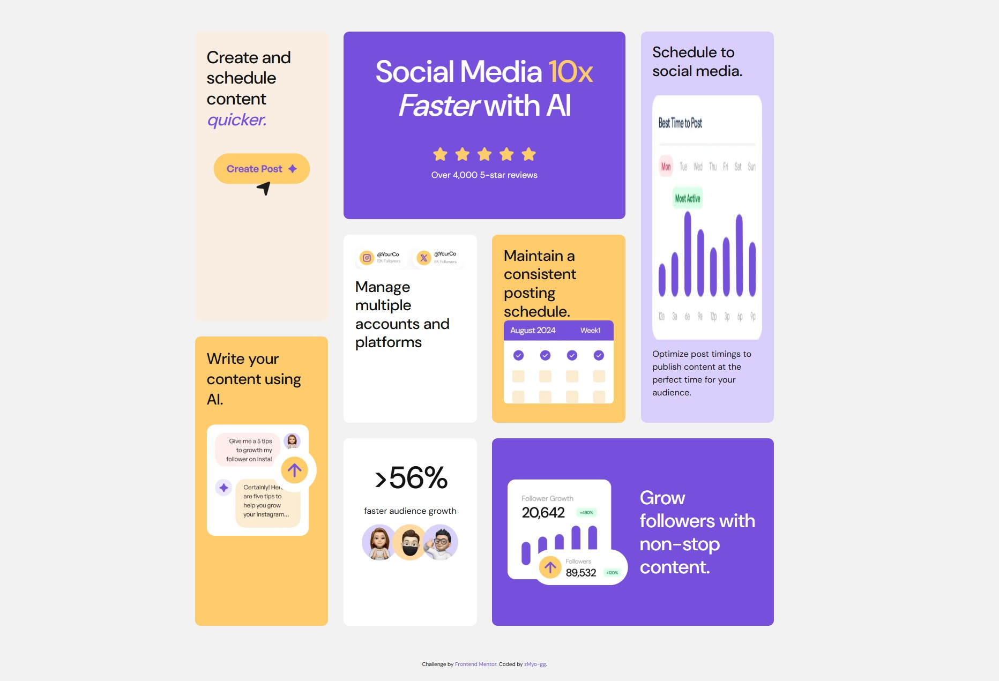

Digital Bank Landing Page
Landing page moderna y responsiva para una institución financiera. Destaca por su diseño limpio, posicionamiento avanzado de fondos y un menú de navegación móvil interactivo.
Soy un desarrollador web de Perú. Me especializo en crear interfaces responsivas y arquitecturas frontend confiables utilizando HTML5, CSS3 y JavaScript. Explora mis proyectos y descubre cómo puedo aportar valor a tu próximo producto web.
Frontend Developer — Freelancer
Desarrollador enfocado en el detalle. Experiencia creando sitios en Netlify y servicios en plataformas como Freelancer.
Todos mis proyectos web incluyendo mis primeras practicas, plantillas y aplicaciones interactivas.

Landing page moderna y responsiva para una institución financiera. Destaca por su diseño limpio, posicionamiento avanzado de fondos y un menú de navegación móvil interactivo.

Formulario interactivo de múltiples pasos. Incluye validación de campos, selección de planes (mensual/anual), cálculo dinámico de precios y un resumen final antes de confirmar.

Tarjetas de descarga para extensiones de navegador. Diseño limpio, moderno y totalmente adaptable a dispositivos móviles.

App de calculadora interactiva con cambio de temas usando variables CSS y manipulación del DOM.

Componente interactivo de preguntas frecuentes. Utiliza JavaScript para la lógica de acordeón, permitiendo mostrar u ocultar múltiples respuestas.

Tarjeta de perfil con enlaces sociales centrada y responsiva, ideal como componente reutilpzable en portafolios y dashboards.

Diseño de cuadrícula asimétrica estilo Bento totalmente responsivo, maquetado para adaptarse a diferentes tamaños de pantalla.
Desglose de mis habilidades de desarrollo web core y experiencia práctica.
Experto en estructurar sitios web accesibles, uso de Flexbox/Grid y animaciones. Enfoque mobile-first.
Cómodo creando lógica asíncrona, manipulación del DOM y desarrollo de funcionalidades interactivas.
Actualmente aprendiendo React para construir interfaces basadas en componentes, manejar estado y consumir APIs en proyectos más avanzados.
Estoy disponible para proyectos freelance y oportunidades a tiempo completo.